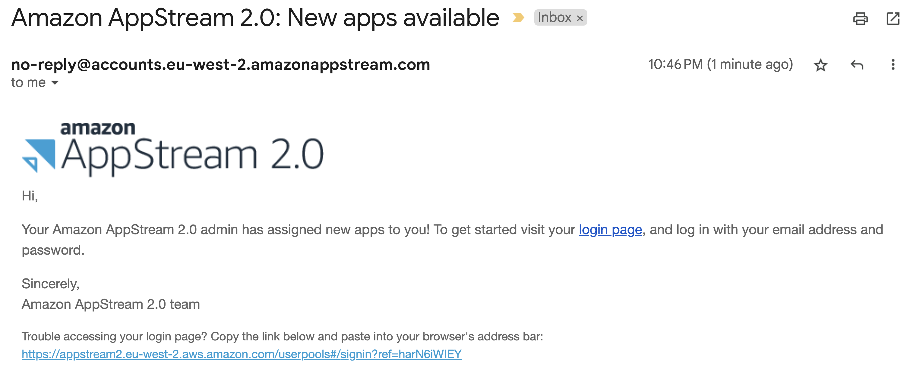
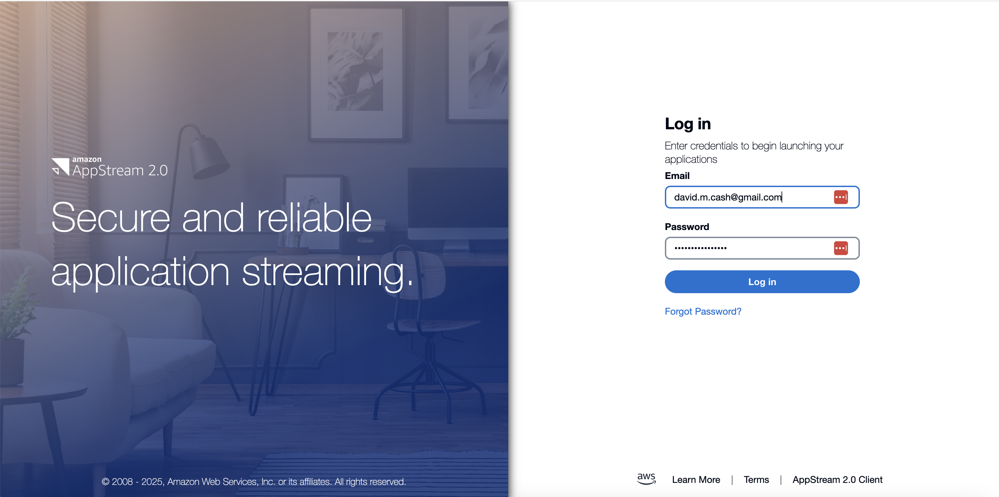
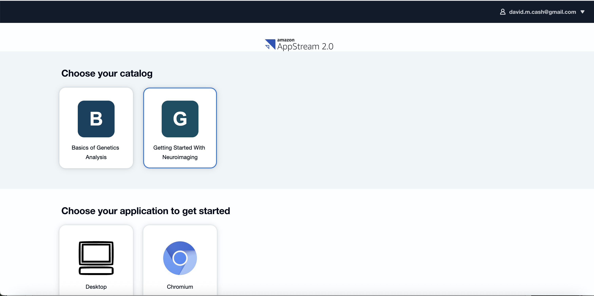
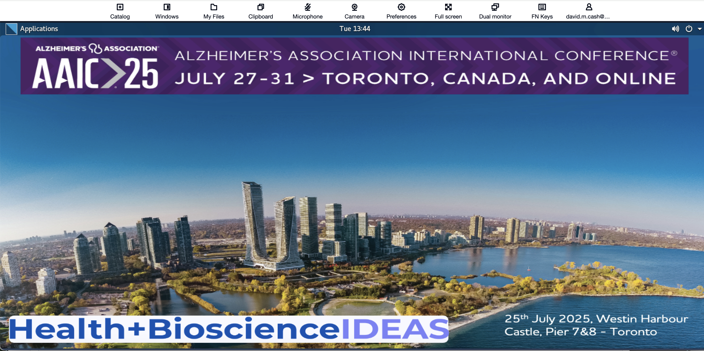
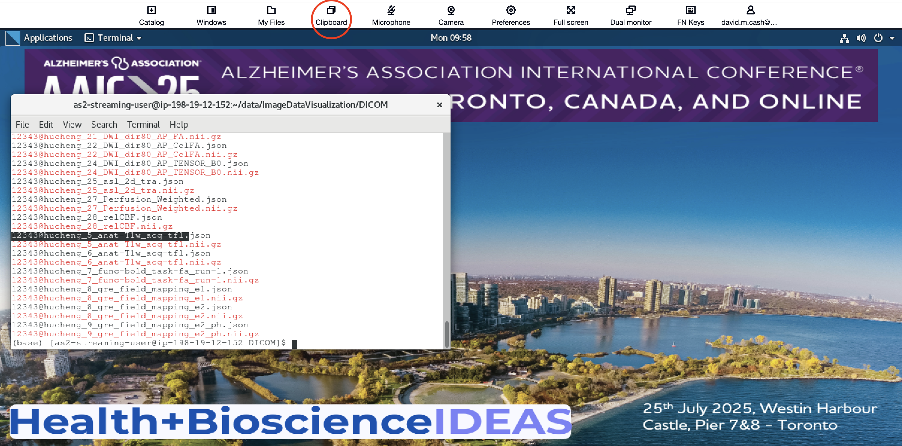
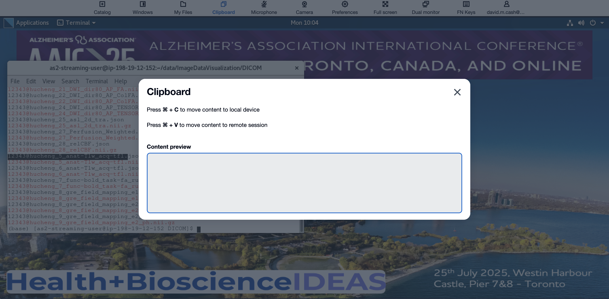
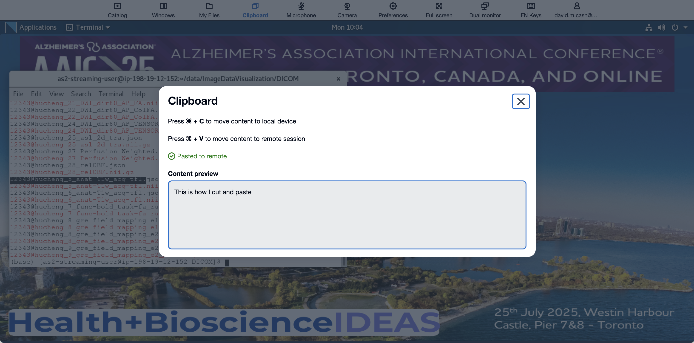
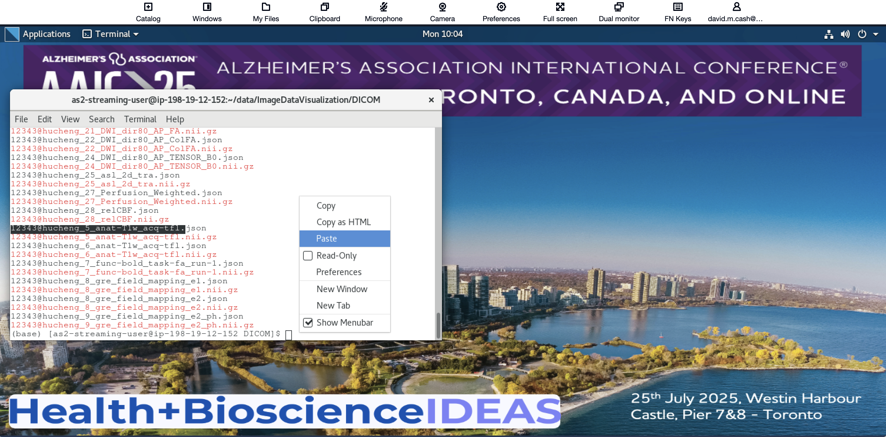

Working with the Virtual Machine
Last updated on 2025-09-09 | Edit this page
Connecting to your virtual machine
This page will tell you how to access your personal virtual (VM) to run these lessons. The virtual machine is essentially a “computer within a computer”. For this workshop, we have created virtual machines that have all the necessary software to perform the lessons. Here are the requirements for AWS AppStream2.0 from the manufacturer’s website: Users can access AppStream 2.0 through an HTML5-capable web browser on a desktop computer such as a Windows, Mac, Chromebook, or Linux computer. HTML5-capable web browsers that can be used include the following: Google Chrome, Safari, Microsoft Edge.
We would recommend not using Mozilla Firefox, particularly on Mac OS X, as we have noticed some issues with it at previous workshops.
Logging into the cloud
If you did not supply an email yet, please approach an instructor and we will setup your account
If you have completed the pre-survey questionnaire, then you should have received two emails. These may be located in your spam email:
- One should be from the email address no-reply@accounts.us-east-2.amazonappstream.com with the title Start accessing your apps using Amazon AppStream 2.0. This will have the link to set your password and log in for the first time.
- A second email should come from the same email with the title
Amazon AppStream 2.0: New apps available.

- Click on the login link, and you should see the following page.

- Click on the Desktop item. It will then launch a
computer and you will be able to see the Desktop on the screen

- You will see a status message that it is starting your machine.
After that you should see a desktop of the computer you will be doing
the lesson with.

- If you get an error message saying “Resources not available, please wait a few minutes, as there will be more virtual machines spinning up to match the demand.
Copying commands to the VM
Our goal for this workshop is for you to type as many of the commands as possible, as we don’t find attendees absorb the information as much if you are only repeatedly cutting and pasting commands into the terminal, or if tou are just clicking on cells to run commands. At the same time, it is useful to have the ability to copy commands from these lessons and then paste them into the VM.
Look out for a message from your web browser asking you to allow the web page to access the clipboard. Please make sure to allow this, as it will be easier to cut and paste from these lessons into the VM.
Another option is to use the clipboard option on the top menu of the VM. Click on the clipboard option found above

This will open up a little dialog.

Copy the text This is how I cut and paste from this
lesson, and then use the appropriate shortcut (Cntl-V for PC or ⌘-V for
Mac) to put that in a terminal.

This is now on the virtual machine’s clipboard. You can past this in by right-clicking in a terminal window and selecting paste.

And voila! You shoudl see the paste in the virtual machine.